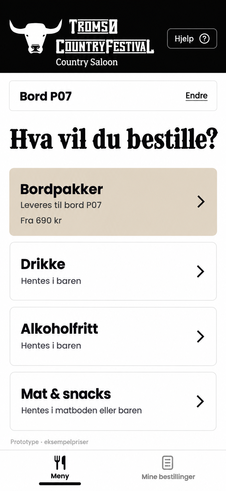
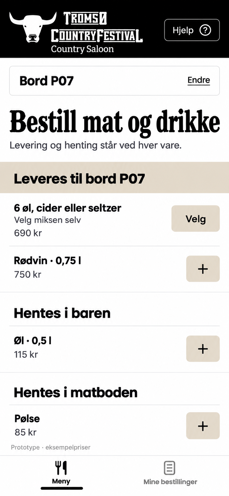
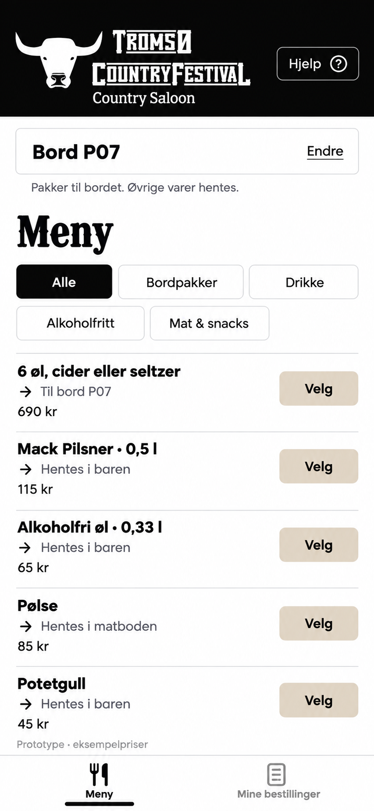

Samme meny og samme bestillingsflyt, med tre ulike oppsett. Prøv dem på telefonen før vi velger endelig design.
A · Kategori først
Velg bordpakker, drikke eller mat før du ser produktene.

B · Leveringssted først
Se produkter gruppert etter bordlevering, bar og matbod.

C · Rett til menyen
Se produkter og priser med en gang. Leveringssted står ved hver vare.
